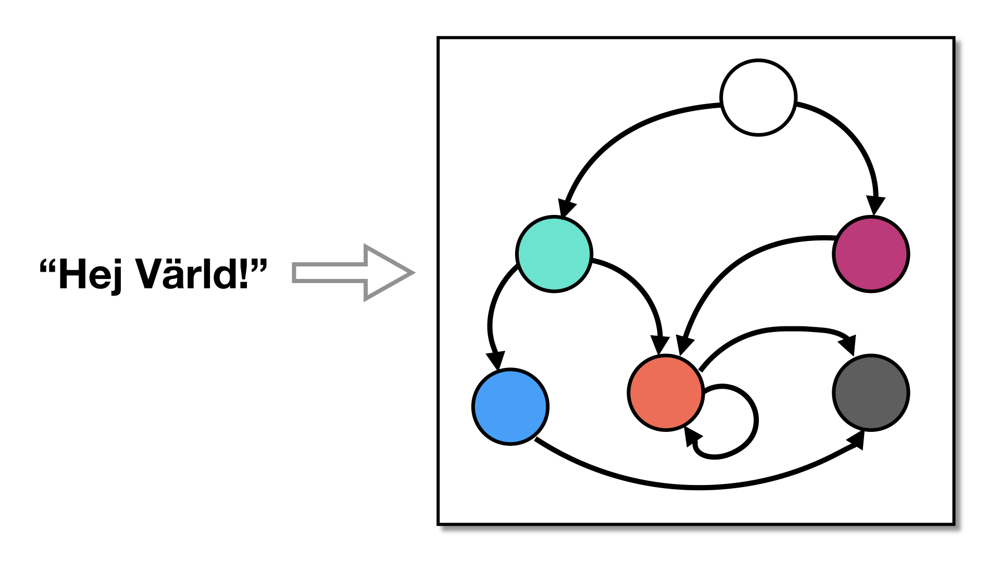

Obfuscate integer and/or string literals (such as 42 or "42"). Use
--EncodeLiteralsKinds to choose what to encode — integer, string,
or both — then pick how with
Encoding integers and
Encoding strings below.
| Option | Arguments | Description |
|---|---|---|
| --Transform | EncodeLiterals | Replace literal integers and strings with less obvious expressions. |
| --EncodeLiteralsKinds | integer, string, * | Specify the types of literals to encode Default=integer,string.
|
| Option | Arguments | Description |
|---|---|---|
| --Transform | EncodeLiterals | Replace literal integers and strings with less obvious expressions. |
| --EncodeLiteralsMaxLevel | INTSPEC | Deprecated (no effect). Formerly the recursion depth of the retired split integer kind. Accepted for compatibility but ignored. Default=100. |
| --EncodeLiteralsMaxTransforms | INTSPEC | Deprecated (no effect). Formerly the number of EncodeArithmetic transformations applied by the retired split integer kind. Accepted for compatibility but ignored. Default=100. |
| --EncodeLiteralsIntegerKinds | opaque, split | Specify how to encode integer literals. Default=opaque.
|
For example, this function:
int foo(void) {
int x = 42;
return x;
}
becomes, with --EncodeLiteralsIntegerKinds=opaque (the default), an expression that still
evaluates to 42 but is built from opaque program state, so the value is no longer visible. The
literal is decomposed into random sub-values that are recombined and each encoded from
opaque state, so 42 itself never appears anywhere in the output. This kind requires a
--Transform=InitOpaque step before EncodeLiterals to set that state up:
int foo(void) {
int x;
/* 42 = a + b for random a, b; each of a, b is built from opaque state,
so neither 42 nor a recognisable part of it is written literally */
x = + ;
return x;
}
You can apply this transformation to a part of a function. First, include tigress.h as usual, then enclose the regions you
want to transform using the ENCODE_INTEGER_BEGIN and ENCODE_INTEGER_END macros:
void foo () {
...
ENCODE_INTEGER_BEGIN(obfuscateThis);
int x = 1234567;
ENCODE_INTEGER_END(obfuscateThis);
...
ENCODE_INTEGER_BEGIN(obfuscateThat);
int y = 7654321;
ENCODE_INTEGER_END(obfuscateThat);
...
}
The arguments to the macros (obfuscateThis and obfuscateThat) are tags that you specify in the -Regions=... option
in your tigress command:
tigress ... \
--Transform=EncodeLiterals \
--Functions=foo \
--Regions=obfuscateThis,obfuscateThat \
...
When --EncodeLiteralsIntegerKinds=opaque, each literal is replaced by an
opaque expression built from the opaque invariants set up at
--Transform=InitOpaque. The same selection options the other opaque
consumers carry (AddOpaque, Flatten, Merge) apply here
too, letting you steer which invariants are drawn, at what resilience, and how
many are composed. By default the literal is built by the value-tree
strategy — a recursive decomposition whose leaves encode only random
sub-values, so the literal never appears in the output. In deity mode,
--EncodeLiteralsSelect pins the strategy or invariant by name (see
--InitOpaqueList): --EncodeLiteralsSelect=value_tree names the
default explicitly, whereas selecting a single bare encoder (e.g.
mba_nonlinear) emits the literal as an additive term, so choose one only
deliberately.
| Option | Arguments | Description |
|---|---|---|
| --EncodeLiteralsInvariantKinds | identity, modular, mba, structure_state, scalar_state, environment, plugin, * | Comma-separated list of the kinds of opaque invariant the integer opaque kind may draw from when building an opaque expression for a literal, named by the hardness family they rest on. Constrained to the kinds set up by --InitOpaqueInvariantKinds. Only meaningful with --EncodeLiteralsIntegerKinds=opaque.
|
| --EncodeLiteralsInvariantResilience | trivial, local, global, interprocedural, inter_process, * | Comma-separated list of the resilience levels the integer opaque kind may draw from -- the scope of analysis an attacker must run to decide the invariant. Constrained to the levels set up by --InitOpaqueInvariantResilience. Only meaningful with --EncodeLiteralsIntegerKinds=opaque.
|
| --EncodeLiteralsMaxSize | INTSPEC | The largest number of sub-opaques one opaque value may be composed of when the integer opaque kind builds an expression for a literal. With the default of 1 the value is a single opaque; a larger value composes several independent opaques. The actual size is drawn at random from 1 to the given value. Only meaningful with --EncodeLiteralsIntegerKinds=opaque. Default=1. |
| --EncodeLiteralsSelect | (Deity mode only.) Comma-separated list of exact invariant names the integer opaque kind must draw from, bypassing the kind and resilience selection entirely. Names come from --InitOpaqueList. Silently inert unless the deity key is supplied with --DeityMode. The named invariants must have been set up by InitOpaque, so pair this with a permissive --InitOpaqueInvariantKinds/--InitOpaqueInvariantResilience. The special name value_tree selects the default recursive value-tree strategy (which never emits the literal); a single bare invariant name (e.g. mba_nonlinear) instead emits the literal as an additive term, so use one only deliberately. |
|
| --EncodeLiteralsStructs | Deprecated spelling of --EncodeLiteralsInvariantKinds. Kept for compatibility. Replace --EncodeLiteralsStructs=list,array with --EncodeLiteralsInvariantKinds=structure_state. Replace --EncodeLiteralsStructs=env with --EncodeLiteralsInvariantKinds=environment. Default=The kinds specified in --InitOpaqueInvariantKinds.. |
| Option | Arguments | Description |
|---|---|---|
| --EncodeLiteralsEncoderName | string | The name of the generated encoder function (only for encoded strings). Default=None. |
| --EncodeLiteralsStringKinds | fsm, chunk, * | How to encode string literals. When you list several, one is chosen at random each run. Default=fsm.
|
For example, this function:
char *foo(void) {
return "hi";
}
becomes, with --EncodeLiteralsStringKinds=fsm (the default), a call to a generated function
that writes the string one character at a time:
char litStr[3];
void stringEncoder(int n, char str[]) {
int i = 0;
switch (n) {
case 0:
str[i] = 'h';
i++;
str[i] = 'i';
i++;
str[i] = '\0';
i++;
break;
}
}
char *foo(void) {
stringEncoder(0, litStr);
return litStr;
}
With --EncodeLiteralsStringKinds=chunk the characters are encoded too, so no readable text
is left anywhere in the output — here the "hi" bytes come out of an exclusive-or:
char litStr[3];
void stringDecoder(int n, char str[]) {
int i = 0;
unsigned int c;
switch (n) {
case 0:
c = 1544710088U ^ 1544687264U; /* the "hi" bytes */
str[i] = (char)((c >> 0) & 255);
i++;
str[i] = (char)((c >> 8) & 255);
i++;
str[i] = '\0';
i++;
break;
}
}
char *foo(void) {
stringDecoder(0, litStr);
return litStr;
}
The generated string decoder is deliberately simple. To make it less conspicuous, transform it
further — for example with
Virtualize (to hide the string contents) and
RndArgs (to hide the interface).
This matters especially with chunk: without a following transform, a compiler's optimizer
may fold the decoding back to the original string.